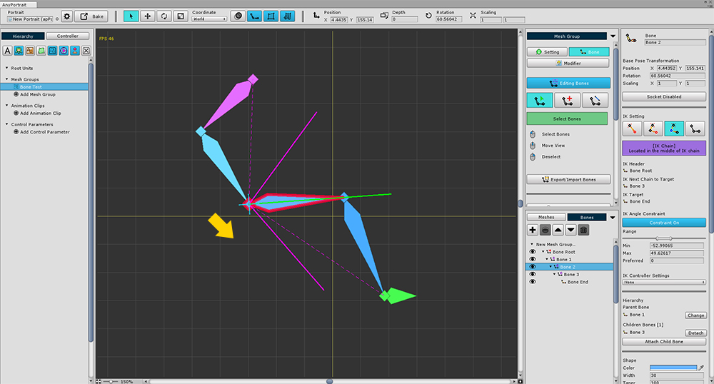
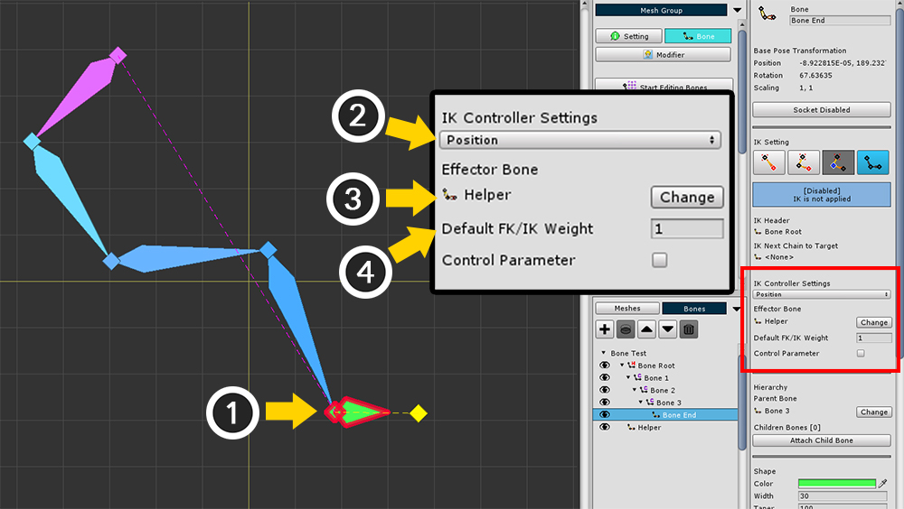
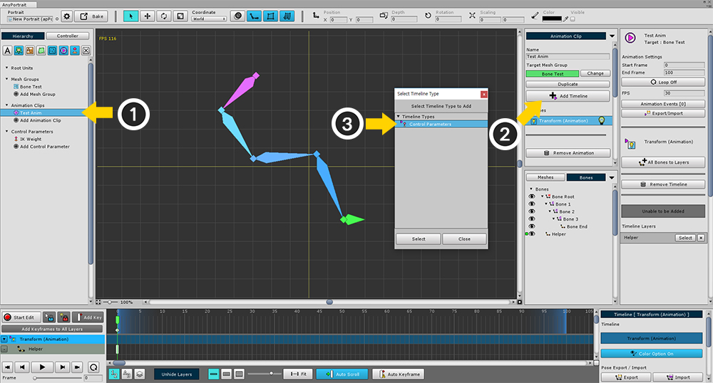
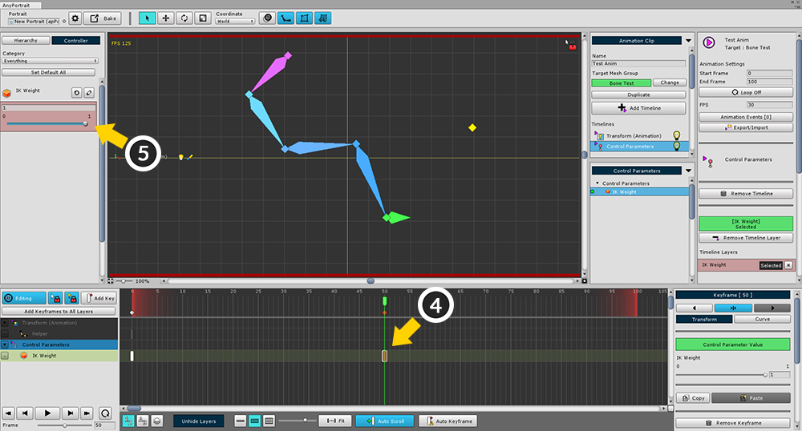
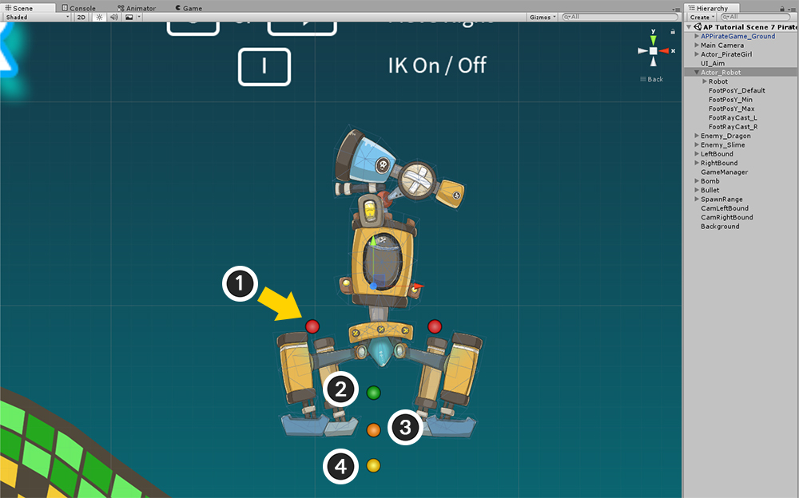
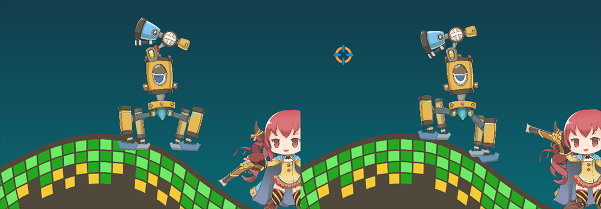

AnyPortrait > Manual > Bone IK Controller
Bone IK Controller
1.1.8
With "Bone IK chain" set, you can control IK with an external bone.
With this function, you can give various animation effects.
Depending on the terrain, you can create a more realistic walking animation by changing the height of feet.
Or, in real time, the character can hold onto the weapon towards the "player-aimed position".
This page covers how to set up a Bone IK controller, and how it can actually be applied in the game.

This is the screen for configuring the Bone IK chain as described on the previous page.

Create a Bone to control IK.
(1) Create an additional bone,
(2) Set it as Helper.
There is no difference in function of Helper Bone.
Setting and Testing the Position Controller

(1) Select Target Bone of IK Chain.
(2) Change IK Controller Settings to Position.
(3) Press the Change button to select the Helper Bone you just created as the Effector Bone.
(4) Change Default FK/IK Weight from 0 to 1.
Position Controller is a mode in which IK operates so that the position of the IK's Target Bone is as close as possible to the Effector Bone.
Look At Controller is a mode in which IK operates so that the direction pointed by the IK's Target Bone points to the Effector Bone.
Default FK/IK Weight is the default weight value applied if there is no other weight setting.
If the value is 1, the IK controller is 100% applied. If the value is 0.5, only 50% is applied.

Now let's test whether the IK controller is working.
(1) Add "Transform (Animation)" Modifier.
(2) Create an animation, select a mesh group, and add a "Transform (Animation)" timeline.
(3) Select Helper Bone and register it as a timeline layer.
(4) Create a keyframe and modify its position.

When you exit edit mode, you will see the IK chain moving to reach the Helper Bone.
(The above image appears to be in edit mode, but the IK controller does not work in edit mode.)
Setting and Testing the Look At Controller

Select the Target Bone in the IK chain and change the IK controller type to "Look At".
"Look At" method works so that each bone moves slightly and looks at the target without changing the shape of the IK chain.

If you select the animation you created above, you will see that the IK chain does not reach the Helper Bone, unlike the Position method.
Instead, the Target Bone points to the Helper Bone, which means that the Bone does not rotate a lot.
Applying the Look At Controller [without an IK Chain
Unlike the Position Controller, the Look At Controller works even without an IK chain.
If you set the Look At Controller to a bone that has no child bones or the IK chain is in the Disabled state, the IK is processed for a single bone.
The function without IK chain is applied from v1.1.8.
Preview IK controller results in Edit mode
In Edit mode, the IK controller does not work because of the complexity of processing modifiers.
But you can see the results in advance.
(1) If you hold down the Ctrl and press the Modifier Lock button, the Modifier Lock setting dialog box appears.
For the modifier lock setting dialogue, please check the relevant page.
(2) When "Preview Calculated Bones" is turned on, the shape of the finally calculated bones will be displayed when the lock is on.
The IK controller result is reflected in the bones in the preview state at this time.
Adjusting IK controller weight with a control parameter

"Animated FK method" and "IK controller controlled IK method" can be mixed and used simultaneously by weight.
While the game is running, you may need the animations produced, or you may need IK, so the two need to switch naturally.
At this time, the control parameters are used to easily change the weight value at any time.
(1) Create a Control Parameter. I created it under the name "IK Weight".
(2) Set the Type to Float.
(3) Set the Range to "0 for minimum value, 1 for maximum value".

(1) Select Target Bone.
(2) Check "Controller Parameter" in the properties of IK Controller Settings and press the Change button.
(3) Select the control parameter that you created.
The IK controller results are now reflected according to the control parameter values (0 to 1).
Animation or script can be used to control the value of control parameters.
(In this state, "Default FK/IK Weight" is not used.)

Now let's see how the animation changes depending on the value of the control parameter.
(1) Select the animation you created earlier.
(2) Press the Add Timeline button to (3) add the Control Parameters timeline.

(1) Select the control parameter you created and register it as a timeline layer.
(2) create a keyframe, and (3) set the value of the control parameter to 0.

(4) Create and select the next keyframe.
(5) Set the value of the control parameter to 1.

You can see that the rate at which IK is applied changes depending on the value of the control parameter.
Example how to apply IK Controller to game
The 7th demo scene is a sample game with an IK controller. (Try the demo sample game)
Here is a brief explanation of how IK works in this game.

It is a quadruped robot that appears in the sample game.
This robot follows the player and helps in launching bombs.
The robot fires a bomb with a robotic arm above the head.
The robot walks to the left and right with four legs.

The four legs are made of individual IK chains.
Helper Bones are created where the feet touch the ground.
These Helper Bones are connected to the Effector Bone of the IK controller and set to "Position" type.
Helper Bones are named "Helper Foot Front R", "Helper Foot Front L", "Helper Foot Back R" and "Helper Foot Back L".

The robot arm that fires the bomb is also made of IK chain.
The last bone that does not belong to the IK chain is a socket.
I added a Bone named "Helper Aim" to the bomb-targeting animation and connected it to the IK controller.
The IK controller type is "Look At".

It is a rough way to use the IK controller in the game.
1. Recognizing the terrain and adjusting the height of the foot
Try Raycast downwards in real time, slightly above the foot position.
If the Raycast process is successful, move the Helper Bone to the position where the ray reached the ground.
At this time, if you forcefully move the Helper Bone, robot's feet will not fall from the ground throughout the walking animation.
By using the "SetBonePositionConstraintBySurface" function of apPortrait, the height of the foot is corrected according to the terrain, and the walking animation can work normally.
The "Default surface position", "Current surface position", and "Min/Max surface position" required for the SetBonePositionConstraintBySurface function are set using different Transforms in the scene, and then the height value is obtained.

To get the position value to use as a parameter in the unity scene, create GameObjects and reference the Transform information.
1. The starting point for trying Raycast
2. "Max Surface Position" as a parameter of the SetBonePositionConstraintBySurface function
3. "Default Surface Position" as a parameter of the SetBonePositionConstraintBySurface function
4. "Min Surface Position" as a parameter of the SetBonePositionConstraintBySurface function
RaycastHit2D RaycastHit_RobotFootR = Physics2D.Raycast(FootRaycast_R.position, new Vector2(0.0f, -1.0f), 30);
if (RaycastHit_RobotFootR && RaycastHit_RobotFootR.collider != null)
{
robot.SetBonePositionConstraintBySurface( "Helper Foot Front R",
FootPosY_Default.position.y,
RaycastHit_RobotFootR.point.y,
FootPosY_Min.position.y,
FootPosY_Max.position.y,
ConstraintSurface.Ysurface,
Space.World);
}

2. Naturally aiming with a robotic arm
Move the "Helper Aim" Bone to the location of the aiming point used in the game.
Since the Look At IK controller is activated, no further processing is required.
robot.SetBonePosition("Helper Aim", aimPosition, Space.World);